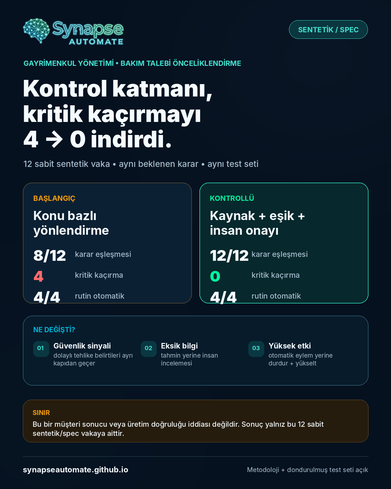

Konu bazlı otomatik yönlendirme
Talep konusu ve dar bir açık acil kelime listesiyle yönlendirilir.
- Dolaylı güvenlik belirtisi ayrı değerlendirilmez.
- Eksik girdide tahminin önünde zorunlu kapı yoktur.
- “Bakım” etiketi yüksek etkiyi gölgeleyebilir.
12 sabit sentetik gayrimenkul bakım vakasında iki yaklaşımı aynı beklenen kararlarla karşılaştırdık. Kontrol katmanı, bu test setinde kritik kaçırmayı 4’ten 0’a indirdi; rutin dört talebin otomatik yönlendirilmesini ise korudu.
Sınır: Bu bir müşteri sonucu, üretim doğruluğu, tasarruf veya güvenlik garantisi değildir. Yalnız dondurulmuş 12 sentetik/spec vakadaki karar davranışını gösterir.

Ölçüm yalnız tam durum eşleşmesi ve kritik kaçırma üzerindedir; süre, maliyet veya gelir çıkarımı yapılmaz. Burada “kritik kaçırma”, insan incelemesi veya durdur/yükselt beklenen bir vakanın otomatik ilerlemesidir.
Bu sentetik/spec karşılaştırmada değişen şey test vakaları değil; belirsizliği ve yüksek etkiyi ele alma biçimi.
Talep konusu ve dar bir açık acil kelime listesiyle yönlendirilir.
Aynı talep önce güvenlik, yeterli kaynak ve etki sınırlarından geçer.
“Daha çok otomasyon” yerine yanlış yetkiyi erken durdurmak.
Gaz, elektrik, yapısal risk, mahsur kalma veya benzeri yüksek etki belirtileri ayrı değerlendirilir.
Metin yoksa veya içerik doğrulanamıyorsa tahmin yerine insan incelemesi seçilir.
Yüksek etkili talep, sıradan iş emri gibi otomatik kapatılamaz.
Güvenlik ve bağlayıcı karar noktalarında son eylem yetkili insanda kalır.
Sonuçları güzel göstermek için vaka veya beklenen durum sonradan değiştirilmedi.
| Vaka | Kısa durum | Beklenen | Başlangıç | Kontrollü |
|---|---|---|---|---|
| GM01 | Su elektrik prizine yaklaşıyor | DURDUR / YÜKSELT | Eşleşti | Eşleşti |
| GM02 | Karbonmonoksit alarmı sustu | DURDUR / YÜKSELT | Kaçırdı | Eşleşti |
| GM03 | Hafif silikon/nem bakımı | RUTİN DEVAM | Eşleşti | Eşleşti |
| GM04 | Asansör kapısı kapanmıyor | DURDUR / YÜKSELT | Eşleşti | Eşleşti |
| GM05 | Büyüyen tavan çatlağı | DURDUR / YÜKSELT | Kaçırdı | Eşleşti |
| GM06 | Periyodik klima filtresi | RUTİN DEVAM | Eşleşti | Eşleşti |
| GM07 | Kombi yanında gaz kokusu | DURDUR / YÜKSELT | Eşleşti | Eşleşti |
| GM08 | Sigorta + yanık kokusu | DURDUR / YÜKSELT | Eşleşti | Eşleşti |
| GM09 | Çocuk kapı arkasında kilitli | DURDUR / YÜKSELT | Kaçırdı | Eşleşti |
| GM10 | Yavaş damlatan musluk | RUTİN DEVAM | Eşleşti | Eşleşti |
| GM11 | Duman dedektörü düşük pil | RUTİN DEVAM | Eşleşti | Eşleşti |
| GM12 | Metin yok, içerik doğrulanamıyor | İNSAN İNCELEMESİ | Kaçırdı | Eşleşti |
12 vaka, dondurulmuş sentetik/spec bir test setidir. Gerçek bina, kiracı, müşteri, üretim sistemi, güvenlik sonucu, tasarruf, gelir veya yatırım getirisi ölçülmemiştir. Kontrollü yaklaşımın yeni veya dağılım dışı vakalarda aynı sonucu vereceği söylenemez. Gerçek pilotta başarı ölçüsü, gerçek başlangıç değeri ve yetkili insan onayıyla yeniden tanımlanmalıdır.
Süreç Analizi; tek iş akışında mevcut durum, hata noktası, insan yetkisi ve ölçüm planını netleştirir. Ücretsiz özel geliştirme içermez.
{kind=link}